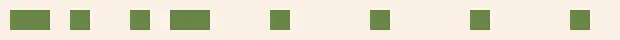
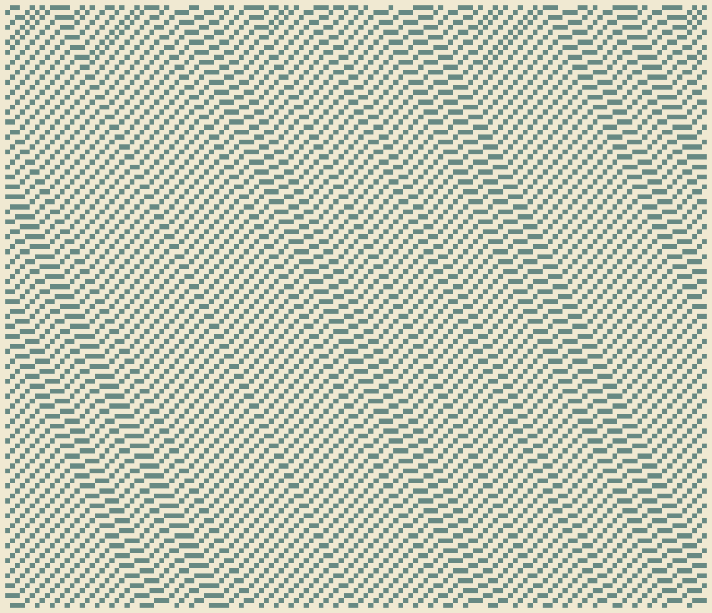
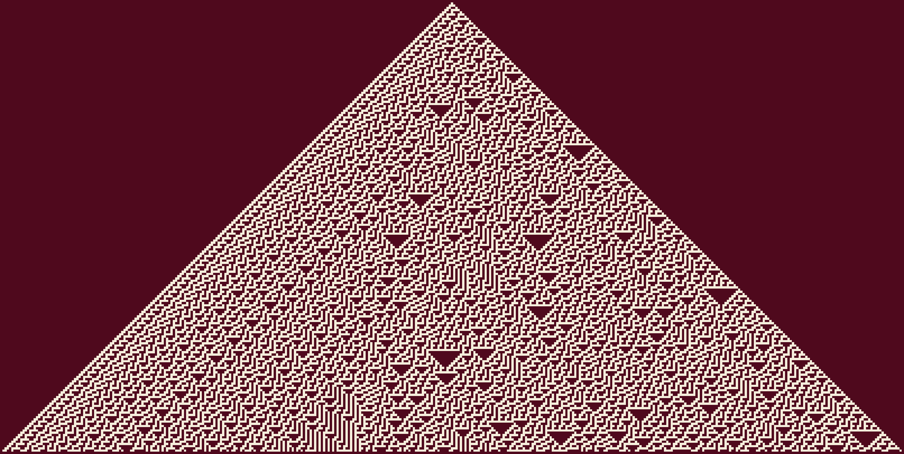
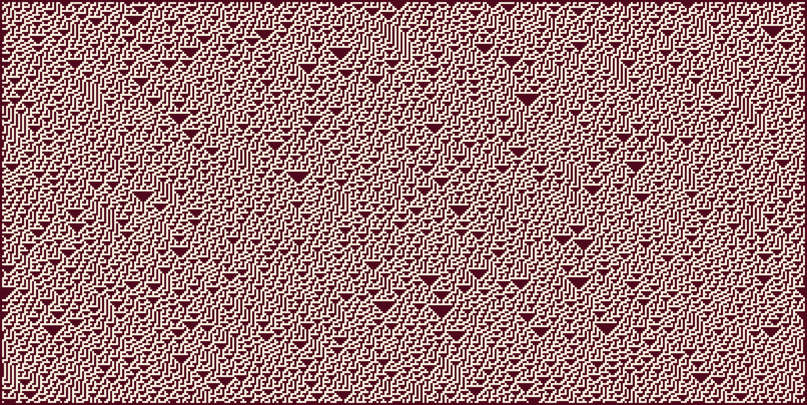
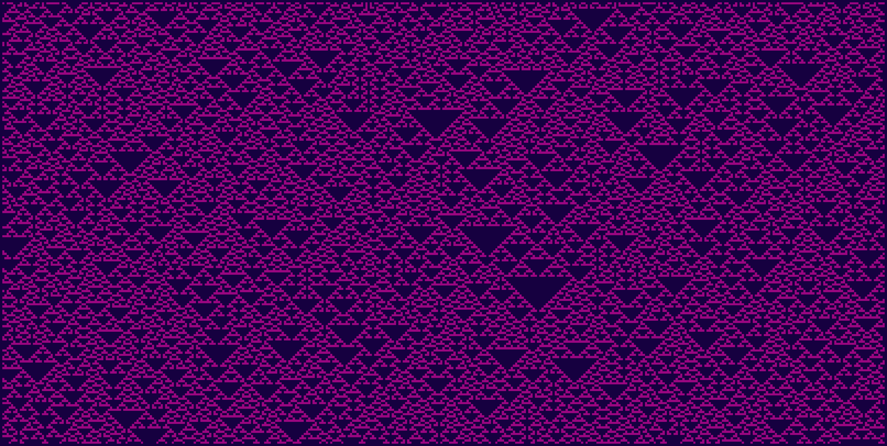
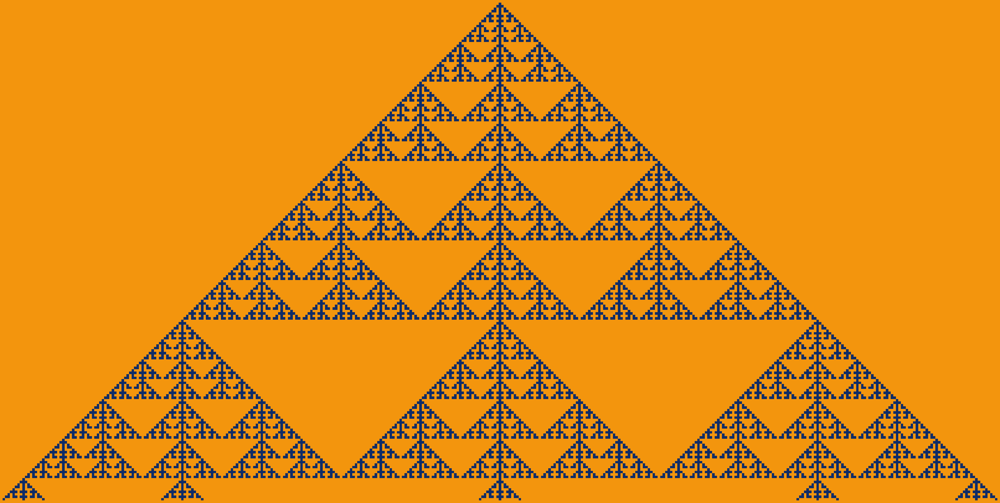
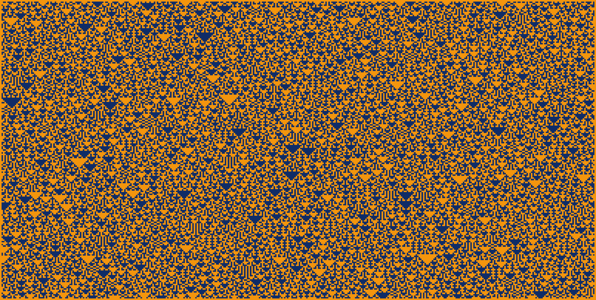
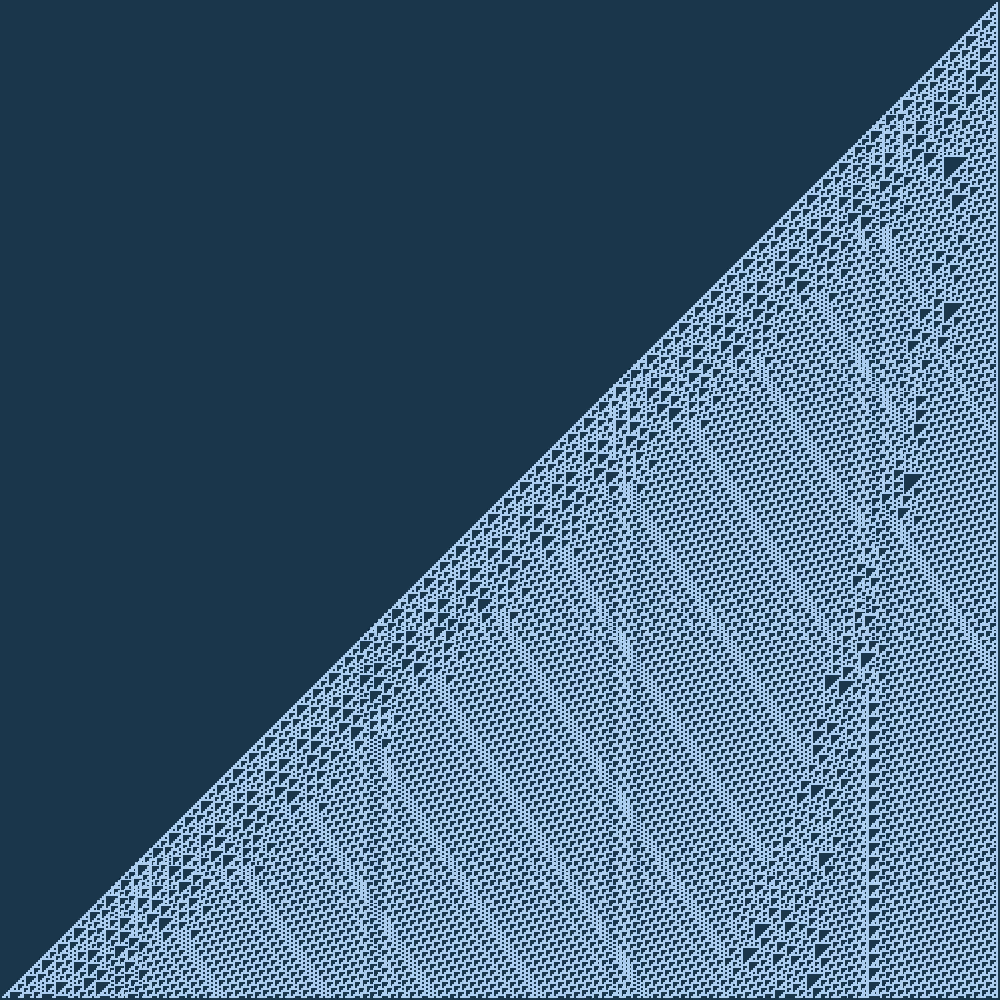
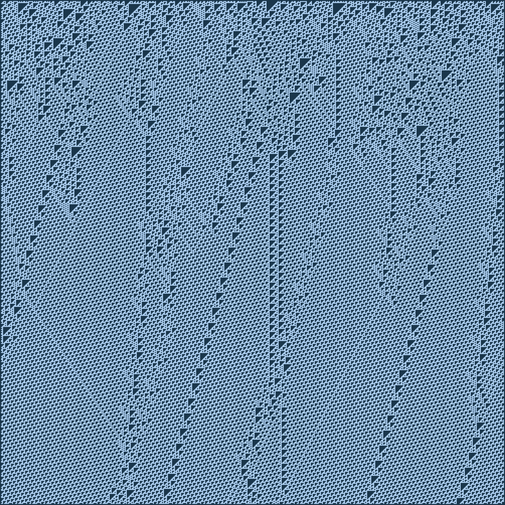

Найпростіші клітинні автомати
Поняття автомата
Абстрактний автомат
Якщо говорити коротко, то автомат — це будь-яка річ, яка може знаходитись в певному стані, та змінювати його на інший, відповідно до певних правил. Практично все на світі може підпадати під таке, дуже абстрактне, визначення. Головна користь від цього поняття: якщо ми представимо якусь систему як автомат, то ми зможемо сконцентруватись правилах її поведінки, не забиваючи свою голову конкретними деталями.
В цій та наступних статтях, ми взагалі не розглядатимемо теорію автоматів з практичної сторони. А, радше, спробуємо знайти красу в них самих. Зазвичай, вони виражають цю красу у створенні абстрактних малюнків.
Клітинні автомати
Клітинними автоматами називають автомати, які працюють великими групами, де кожен автомат знає лише про невелику частину своїх сусідів. Іноді автоматом називають як окрему клітинку, так і всю їх множину.
У найпростішому випадку, клітинний автомат — це рядок із автоматів-клітин, кожен з яких, знаходиться в одному, із наперед заданого набору, стані. Наглядно, кожен зі станів можна позначити своїм кольором. А сам автомат — як рядок кольорових клітинок. Кожна клітинка знає свій колір (стан) та кольори (стани) своїх сусідів. Також, існує певний набір правил, за яким, на основі власного та сусідніх станів, клітинка може обрати свій новий стан. При цьому, для кожної з клітинок ці правила однакові. І застосовуються вони для всіх клітинок одночасно.
Не зважаючи на те, що правила дуже прості а жодна з клітинок не знає про всю систему загалом, їх сумарна поведінка може бути дуже складною. Цим вони завдячують такій особливості нашого всесвіту, як емерджентність. Прості речі разом можуть збиратись у щось більше ніж просто у свою суму.

Напевно, вам важко встежити за розвитком автомата коли він зображений як анімація. Краще відображати історію його розвитку рядок за рядком, згори до низу: так зрозуміліше.

Надалі, всі одновимірні автомати будуть подані як статичні зображення їх розвитку.

Елементарні клітинні автомати
Правила
Одне з найпростіших сімейств клітинних автоматів — елементарні автомати. Новий стан кожної з клітинок такого автомата визначається за станом цієї ж клітинки, а також двох її безпосередніх сусідів. Тобто, кожна клітинка залежить від трьох клітинок: себе, клітинки ліворуч та клітинки праворуч.
Що означають назви
Правила елементарних клітинних автоматів традиційно називають „Правило x“, де „x“ — це якесь число. Для тих, які ми розглядаємо в цій статті, це число лежить в межах від 0 до 255.
Щоб дізнатись правила з числа, і навпаки, необхідно знати бінарну систему числення. Це число показує, як клітинка буде вести себе у всіх можливих випадках. Таких випадків для трьох клітинок, кожна з яких може перебувати в одному з двох станів, існує 23, тобто вісім штук. Розташувавши ці стани у зворотньому порядку та написавши бажане нове значення для кожної із ситуацій, ми отримаємо набір нулів та одиниць. Перевівши їх в десяткову систему числення ми отримаємо назву нашого правила.
Ось схема зашифровування числа 30:

Види правил
Пусті
Автомати з цієї групи повністю припиняють будь-яку діяльність вже через декілька кроків. Спостерігати за ними найменш цікаво.
Правило 32:
Стабільні
Також є автомати, які або зберігають свій стан, або повторюють певний набір станів циклічно. Вони не сильно цікавіші за автоматів з попередньої групи.
Правило 35: 
Повністю хаотичні
Якщо попередні автомати страждали від величезної впорядкованости, то ці навпаки — вже через декілька кроків їх форма втрачає всіляку логіку.
Правило 30 з однієї точки: 
Правило 30 із випадкового набору точок: 
Періодично впорядковані
Іноді трапляються автомати, які, залежно від початкового стану, можуть давати як і повну мішанину, так і складні цікаві форми.
Правило 22:

Правило 22 із випадкового набору точок: 
Правило 150 з однієї точки: 
Правило 150 із випадкового набору точок: 
Структуровані
І лише маленька частка всіх автоматів дає цікаві результати майже не залежачи від свого початкового стану. Всередині симуляції можуть утворюватись та різноманітні структури, які можуть взаємодіяти між собою. Хоч і не завжди, але точно частіше ніж автомати з попередньої групи.
Саме пошуком таких правил, та пошуком цікавих початкових станів для них, і займаються любителі клітинкових автоматів.
Правило 110 з однієї точки: 
Правило 110 з випадкового набору точок: 